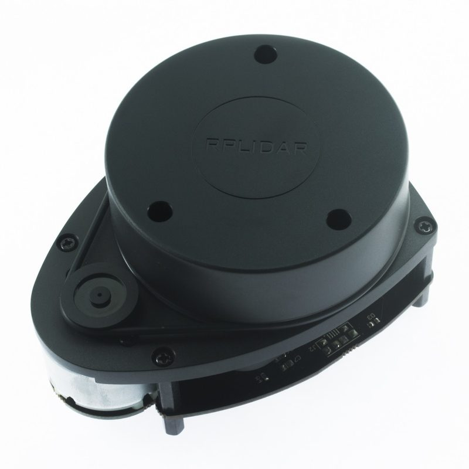
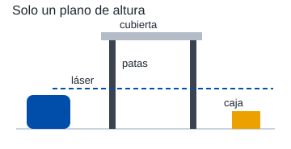
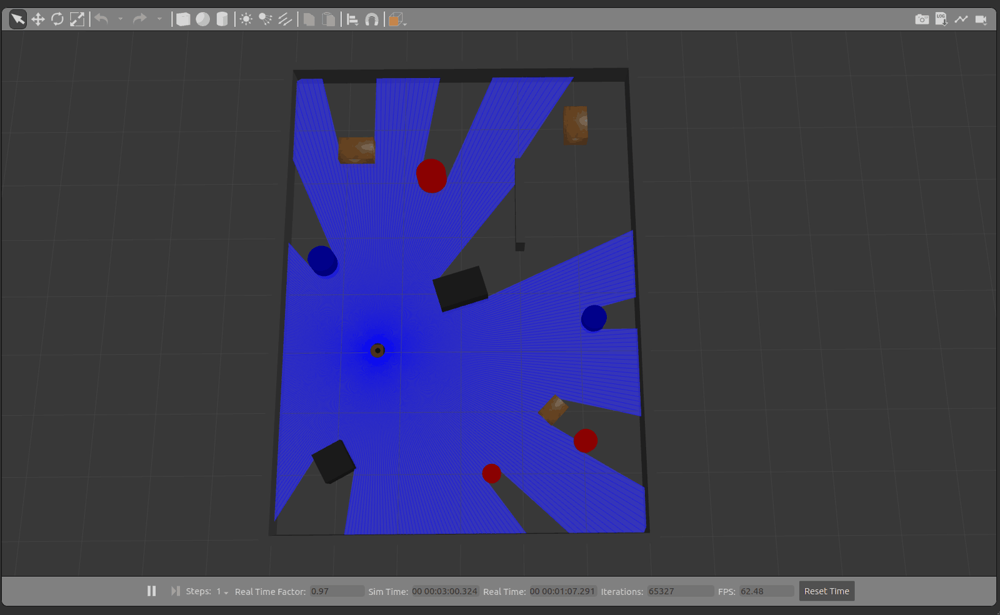
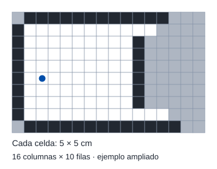
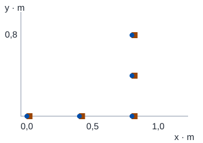
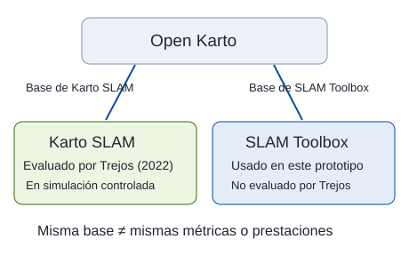
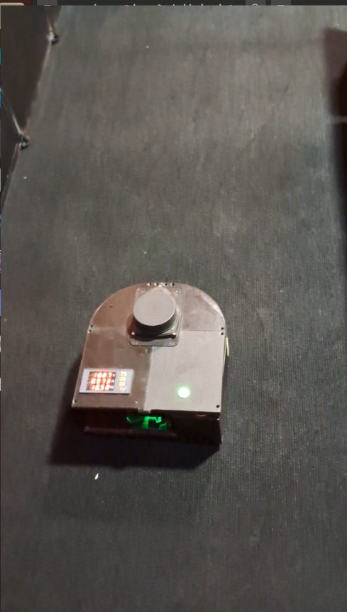
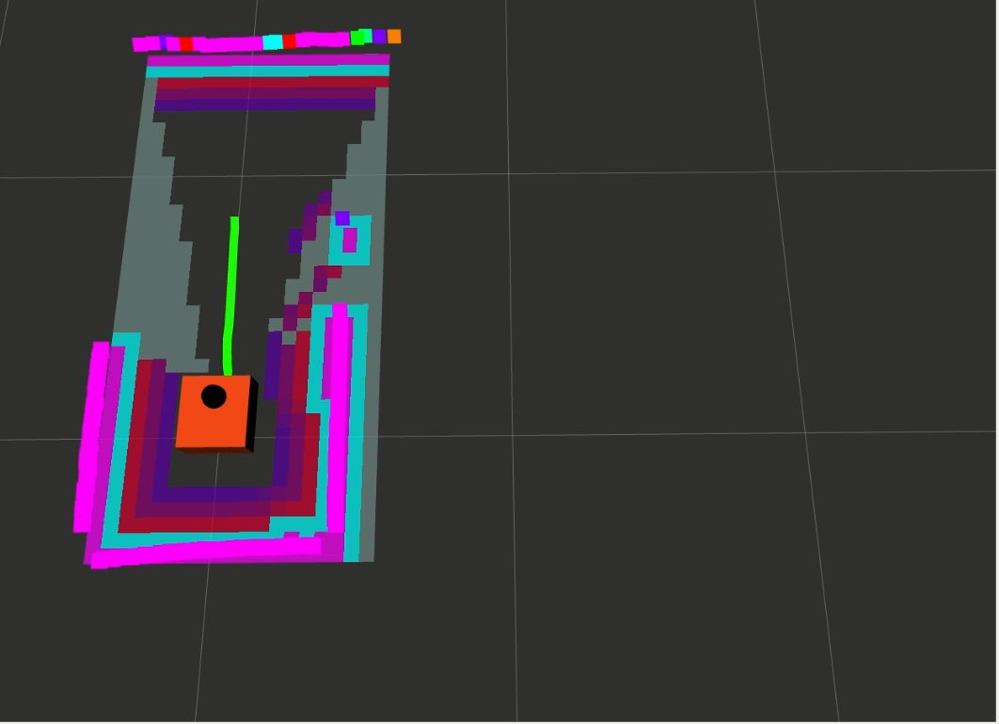
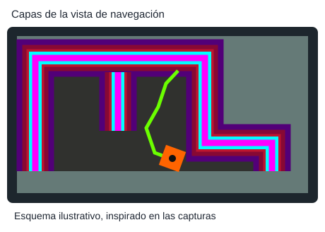
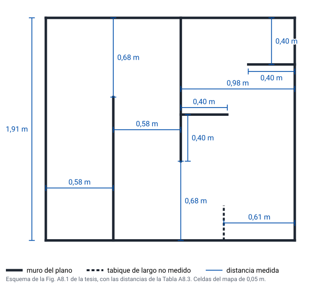

Para hacer un mapa hay que saber dónde está el robot, y para saber dónde está hace falta un mapa. Este tema explica cómo un láser que gira resuelve ese círculo, qué no alcanza a ver y cómo leer los mapas que construyó el robot real.
NivelLectura

El RPLidar A1, el único sensor de percepción del robot. Imagen de Slamtec.
El mismo espacio mapeado en cinco corridas
Cinco de seis ejecuciones dieron un mapa válido, con 3,50 m² de espacio libre en promedio. Son cinco mapas de corridas distintas, no cinco partes de uno 1.
3,50 m²área libre mapeada en promedio, con dispersión de solo 0,03 m²
62,2 %índice medio de cobertura libre, un indicador relativo a la imagen
5 cmlado de cada celda del mapa
5 de 6ejecuciones que produjeron un mapa válido
Ver el detalle: cómo se construye cada mapa
Se hicieron seis ejecuciones independientes de exploración en el mismo recinto. Cinco produjeron mapas válidos: en ellas quedó registrado un promedio de 3,50 m² de espacio libre, entre 3,478 y 3,540 m². Son cinco mapas de distintas corridas, no cinco partes de un único mapa 1.
Para construir cada mapa, el LiDAR toma un barrido: un conjunto de distancias en distintas direcciones. SLAM Toolbox estima desde dónde se tomó cada barrido y enlaza esas posiciones en un grafo de poses. Si reconoce un lugar visitado, puede corregir las estimaciones anteriores. Más abajo veremos cada paso por separado.
¿Por qué cambia el porcentaje si el área es casi igual? El índice divide el espacio libre por las celdas libres y desconocidas de la imagen guardada. Una imagen con más margen desconocido da un porcentaje menor, aunque contenga casi los mismos metros cuadrados libres. El 62,2 % no significa que el robot haya visto el 62,2 % del recinto. Ver las cinco corridas y sus indicadores.
Cómo ve un LiDAR 2D
Un LiDAR 2D mide distancias con luz láser en un plano horizontal 1. No ve fuera de ese plano, y el vidrio o una tela negra degradan la medición 1.
Lo que ve el láser, y lo que no
Interactivo · ilustrativo
Comprueba tres ideas: el láser se detiene en el primer obstáculo, solo detecta lo que cruza su altura y una lectura ausente no demuestra que el espacio esté libre. Elige un caso y mueve el robot con los controles, arrastrándolo o con las flechas. Los puntos rojos son lo único que entrega el sensor.

Un LiDAR 2D observa una sección horizontal, no todo el volumen de los objetos.
El modelo ideal devuelve el primer impacto. Los casos de vidrio y absorción se muestran como ejemplos posibles, no como probabilidades medidas. Necesita JavaScript.
Ver el detalle: cómo mide y cuáles son sus límites
Un LiDAR mide distancias con luz láser. Algunos miden el tiempo que tarda el pulso en volver 2 y otros, como el RPLidar A1 de este robot, usan triangulación óptica, es decir, calculan la distancia según el ángulo con que vuelve la luz reflejada 3. En un LiDAR 2D el emisor y el receptor giran sobre un eje vertical y entregan, en cada vuelta, pares de ángulo y distancia en un plano horizontal. Con eso se detectan paredes y obstáculos 1.
Sus límites principales son dos. No detecta objetos fuera de su plano de barrido, como la cubierta de una mesa o una caja baja, y su medición se degrada ante superficies muy reflectantes, como el vidrio, o muy absorbentes, como una tela negra 1. El recinto de pruebas usa paneles opacos y de color, una elección razonable para un primer prototipo, pero que deja fuera los casos difíciles de una oficina real.

Un obstáculo corta el barrido y deja una zona de sombra detrás. Esa zona puede descubrirse después desde otra posición. Un solo barrido no contiene el mapa completo. Fig. 4.3 de la tesis.
El mapa como una rejilla
El mapa es una rejilla de ocupación de celdas de 5 cm: libre, ocupada o desconocida 4. En este ejemplo, 0 es libre, 100 ocupado y −1 desconocido 17.
De un rayo a las celdas del mapa
Interactivo · ilustrativo
Avanza paso a paso: las celdas antes del impacto se observan libres, la del impacto ocupada y las de atrás siguen desconocidas. Después añade otro barrido o inspecciona cualquier celda. Las lecturas calculan también el área libre y el índice de cobertura que se usan en los resultados.

Ejemplo de rejilla de ocupación. Cada cuadrado representa 5 × 5 cm, aunque se dibuja ampliado.
Lee la rejilla sin confundir área y cobertura
Empieza desconocida. Un rayo deja libres solo las celdas anteriores al primer impacto.
Añade una observación desde otra posición: algunas celdas ocluidas pueden volverse observables.
Con teclado, usa las flechas para recorrer celdas. El área usa tamaño de celda y el índice excluye las ocupadas.
Las acciones explican el modelo de esta guía. Los ejemplos ilustrativos no sustituyen registros del robot.
Ver el detalle: la rejilla y sus módulos
El mapa que construye el robot es una rejilla de ocupación. El plano se divide en celdas, aquí de 5 cm por lado, y cada una queda como libre, ocupada o desconocida 4. Al guardarse, el mapa es una imagen en escala de grises en la que lo claro es libre, lo oscuro es ocupado y el gris intermedio es desconocido 1.
En el mensaje nav_msgs/OccupancyGrid se transportan valores cuyo significado depende del programa que publica el mapa. En este ejemplo usamos 0 = libre, 100 = ocupado y −1 = desconocido17. El mapeo real combina varias observaciones y puede conservar valores intermedios de incertidumbre. No colorea todo el mapa de una vez.
Sobre esa rejilla trabajan los demás módulos. La navegación agrega un margen de seguridad alrededor de los obstáculos, y el explorador busca los bordes entre lo libre y lo desconocido. Ambos temas tienen su propia página.
Marcos de referencia: mapa, odometría y robot
REP 103 fija unidades SI y ejes de mano derecha 5, y REP 105 nombra los marcos map, odom y base_link 6.
Ver el detalle: qué es cada marco
Un marco de referencia es un origen con ejes desde el que medimos posiciones. Aquí seguimos dos convenciones de ROS: REP 103 define unidades SI y ejes en un sistema de mano derecha 5. REP 105 define los nombres, funciones y relaciones de los marcos de una plataforma móvil 6. En el marco del cuerpo del robot, x apunta hacia adelante, y hacia su izquierda y z hacia arriba. En map y odom, los ejes no giran cada vez que gira el robot.
map · referencia global
Sirve para ubicar el robot y los obstáculos en el mapa. SLAM busca mantener coherencia a largo plazo, aunque su estimación puede saltar al corregirse. No garantiza una posición exacta.
odom · referencia local
Suma el movimiento estimado por las ruedas. La pose cambia de forma continua, pero puede acumular deriva. Sirve para seguir el movimiento a corto plazo.
base_link · cuerpo del robot
Su origen y sus ejes viajan con el chasis. El marco del láser queda unido al cuerpo por la posición y orientación de su montaje.
Quién publica cada transformación
La cadena es map → odom → base_link → láser. El 3,63 % es el error relativo medio de la prueba de odometría, no un sesgo identificado del encoder 1.
Dónde se compensa la deriva: map → odom
Interactivo · ilustrativo
Haz avanzar el robot y activa la corrección. Observa que la flecha de las ruedas conserva su largo: lo que se mueve es el origen de odom dentro del mapa.
Ejemplo rectilíneo: odom estima 2,08 m y SLAM estima 2,00 m. La corrección map → odom es −0,08 m: el origen de odom se dibuja 8 cm atrás del de map, y desde ahí la flecha de las ruedas, de 2,08 m, llega a 2,00 m. −0,08 + 2,08 = 2,00 m. Los encoders no se recalibran. Necesita JavaScript.
Ver el detalle: quién publica cada transformación
TF es el sistema de ROS que relaciona estos marcos. En map → odom → base_link → marco del láser, cada flecha expresa la pose del marco hijo respecto del padre, no una orden de movimiento. El nombre concreto del marco del sensor depende del modelo URDF.
Relación
Quién la publica
Qué aporta
map → odom
slam_toolbox
Corrección entre la referencia global y la referencia odométrica.
odom → base_link
Controlador diferencial
Pose continua calculada con los encoders.
base_link → láser
Modelo URDF y publicador de estado del robot
Montaje fijo del sensor, directamente o a través de marcos intermedios.
Cadena conceptual según REP 105 y la arquitectura descrita en la tesis. El árbol real puede incluir marcos intermedios 16.
El 3,63 % no es un sesgo identificado del encoder. Es el error relativo medio de la prueba de odometría en una recta de dos metros. SLAM puede compensar la deriva estimada con observaciones válidas del entorno. Esto no demuestra que elimine ese porcentaje en cualquier recorrido ni que el mapa sea exacto. La exactitud se evaluó aparte, contra un plano del recinto medido con huincha, como se explica en el mapa frente al plano medido.
La misma relación con traslación y giro
La composición es T(map, base_link) = T(map, odom) · T(odom, base_link). Por tanto, T(map, odom) = T(map, base_link) · inversa(T(odom, base_link)). Las transformaciones combinan posición y orientación. Solo en el ejemplo rectilíneo sin giro se reducen a una suma o resta de metros.
Los marcos del modelo en RViz. Cada trío de ejes rojo, verde y azul es un marco, con x, y y z. Captura del autor.
SLAM: mapear y ubicarse a la vez
SLAM estima la pose del robot mientras construye el mapa 7, contrastando la odometría con la geometría que ve el láser.
Ver el detalle: la definición y la ficha del concepto
SLAM significa localización y mapeo simultáneos: estima la pose del robot mientras construye un mapa del entorno 7. La odometría ofrece una primera estimación del movimiento y el láser permite contrastarla con la geometría observada.
Ficha del concepto: SLAM por grafo de poses
Qué es
Una forma de estimar a la vez la trayectoria del robot y el mapa. Las poses son nodos y los movimientos relativos entre ellas son aristas.
Para qué sirve
Corregir la deriva de la odometría cuando el robot reconoce un lugar que ya había visto.
Cómo funciona
Cada arista compara el movimiento medido con el que implican las poses. Un cierre de lazo agrega otra restricción y un resolvedor busca las poses que reducen la suma ponderada de esas diferencias. Con las poses corregidas se vuelven a colocar los barridos.
En el grafo de ejemplo, el cierre sube el desacuerdo de 0 a 29,3 y optimizar lo baja a 0,18. La pared vista al inicio y al regreso pasa de estar a 17,7 cm de sí misma a coincidir.
En este robot
slam_toolbox en modo asíncrono en línea, con cierre de lazo activado y Ceres como resolvedor, en el computador y no en la Raspberry Pi.
Límites
En las corridas reales no se determinó si hubo cierres de lazo. La exactitud de los mapas se comparó con un plano medido con huincha, no con un instrumento de mayor precisión, y su incertidumbre no está incluida en las cifras.
¿Qué significa alinear dos barridos?
Alinear dos barridos es buscar la traslación y el giro que superponen sus partes comunes, y así estimar cuánto se movió el robot 118.
La misma esquina, antes y después de avanzar
Interactivo · ilustrativo
Arriba ves los dos barridos en sus marcos locales. Abajo, superpón B sobre A: mueve el control o pide el ajuste. La curva final muestra el desacuerdo para cada traslación probada. El ajuste elige su mínimo.
A observa una esquina. Tras avanzar 30 cm, B ve la misma esquina 30 cm más cerca. Las ruedas estiman 40 cm: con esa traslación cada punto queda a 10 cm de su par y el desacuerdo total es 700 cm². Con 30 cm los puntos coinciden y el desacuerdo es cero. Ejemplo sin giro. Necesita JavaScript.
Reto: ¿cuánto avanzó el robot?
Reto
Dos preguntas con los números de la curva de arriba. Elige una respuesta y verás al instante si acertaste y por qué.
1. Si B se traslada 40 cm, lo que dicen las ruedas, ¿cuánto vale el desacuerdo total: 0 cm², 100 cm² o 700 cm²? 2. ¿Qué traslación elige el ajuste: 40 cm o 30 cm? Necesita JavaScript para responder con respuesta inmediata.
Ver las respuestas
1. 700 cm²: siete puntos × (10 cm)². 2. 30 cm, el mínimo de la curva, donde los puntos coinciden y el desacuerdo es cero. El robot avanzó 30 cm, no 40 cm.
Ver el detalle: qué es un barrido
Son dos conjuntos de medidas tomados en momentos distintos por el mismo LiDAR, no dos sensores. El barrido A puede tomarse antes de avanzar y el B después. La misma pared aparece en coordenadas distintas respecto del sensor. El ajuste de barridos busca la traslación y el giro que hacen coincidir sus partes comunes. Así estima cuánto se movió el robot 118.
Qué es un grafo de poses
Un nodo guarda una pose, con x, y y orientación θ, y una arista guarda una restricción de movimiento entre dos poses.
Ver el detalle: nodos, aristas y cierre de lazo
Es una red de estimaciones de dónde estuvo el robot. Una pose incluye x, y y orientación θ. Un nodo guarda una pose y el barrido asociado. Una arista expresa una restricción de movimiento relativo entre dos poses. No es una rejilla de paredes ni un conjunto de destinos de navegación.
Nodo · «estuve aquí»
Un círculo con una flecha: posición y dirección del robot cuando se tomó una observación.
Arista · «me moví así»
Relaciona dos nodos con un desplazamiento y un giro estimados a partir de odometría y ajuste de barridos.
Cierre de lazo · «ya conocía este lugar»
Una observación compatible une el presente con una pose antigua y añade una restricción para corregir la trayectoria.
Cuatro trabajos distintos dentro de SLAM
SLAM separa cuatro trabajos: ajuste, grafo de poses, selector de candidatos y optimizador 10. Ceres es el resolvedor 21.
Estar cerca no basta para cerrar un lazo
Interactivo · ilustrativo
Elige una observación antigua y recorre tres pasos: filtrar, comparar y decidir. Un pasillo parecido puede pasar el filtro espacial y fallar la comprobación geométrica.

Comparación ilustrativa después de alinear los barridos.
Ejemplo: la pose 0, antigua y a 0,40 m, pasa el filtro espacial y su desajuste es de 2 cm, menor que el umbral ilustrativo de 6 cm. La pose 5, a 0,45 m, pasa el filtro, pero sus 19 cm de desajuste rechazan el cierre. La pose 11 pertenece a la cadena reciente y la pose 3 está fuera del radio de búsqueda de 1 m. Ninguno de estos números es un parámetro ni un resultado del robot.
Ver el detalle: la tabla de los cuatro componentes
La charla de Macenski distingue cuatro componentes 10. Separarlos permite entender quién propone una coincidencia, quién la comprueba y quién corrige las poses.
Componente
Qué recibe y qué produce
Pregunta que responde
Ajuste de observaciones
Compara geometría del láser, con una estimación inicial del movimiento, para obtener una pose relativa y su incertidumbre.
¿Qué desplazamiento y giro hacen compatibles estas observaciones?
Grafo de poses
Conserva poses, barridos asociados y restricciones entre poses.
¿Qué relaciones debemos satisfacer conjuntamente?
Selector de candidatos
Busca poses anteriores cercanas en el espacio que no pertenecen a la cadena reciente. Su geometría todavía debe comprobarse.
¿Con qué observaciones antiguas conviene intentar un cierre?
Optimizador
Recibe el grafo y ajusta sus poses para reducir el costo ponderado de las restricciones.
¿Qué conjunto de poses satisface mejor las relaciones aceptadas?
En SLAM Toolbox la base de Open Karto aporta el ajuste de barridos y la construcción del grafo. Ceres es el resolvedor utilizado aquí 21. El ejemplo anterior de siete puntos conserva correspondencias conocidas y solo busca una traslación. Sirve para entender un ajuste, pero el programa real también busca coincidencias y estima orientación.
Cuánto confiamos en cada restricción
Cada restricción lleva una incertidumbre, y la matriz de información Ω pondera los residuos 8. Más peso no vuelve buena una asociación falsa.
Grafo de poses y cierre de lazo
Interactivo · ilustrativo
Recorre cuatro pasos: acumular deriva, reconocer el inicio, optimizar las poses y publicar la corrección map → odom. Mira cómo el desacuerdo total sube al añadir el cierre y baja al optimizar, y cómo cambia el mapa que forman las paredes vistas desde cada pose. Inspecciona un nodo para ver su posición y orientación.
Los nodos guardan poses y las líneas restricciones. El cierre de lazo añade una relación con el inicio que contradice a las demás: en este ejemplo el desacuerdo total pasa de 0 a 29,3. Optimizar cambia las poses del grafo y lo baja a 0,18. Publicar map → odom relaciona la pose actual corregida con la odometría, que sigue conservando su deriva. Si el mapa se arma con lo que vio el láser desde cada pose, antes del cierre la misma pared vista al inicio y al regreso queda a 17,7 cm de sí misma. Después de optimizar coinciden, pero el mapa mide 2,15 m de ancho frente a 2,10 m del recinto del ejemplo: un mapa coherente puede conservar un error de escala. Necesita JavaScript para recorrer los pasos.
Recorre el cierre de lazo
Paso 1: inspecciona una pose y la deriva de odom.
Paso 2: se añade una restricción. Las posiciones todavía no cambian y crece el desacuerdo.
Paso 3: compara el desacuerdo antes y después. La odometría naranja permanece como referencia.
Paso 4: TF relaciona las poses actuales. Experimenta con la deriva y comprueba que cerrar no garantiza longitudes exactas.
Con el mapa visible, compara los círculos verdes, la pared vista desde la pose 0, con los cuadrados violeta, la misma pared vista desde la 12. Luego deja el giro en 0° y la escala en 4 %: el regreso coincide, pero el ancho del mapa no.
Las acciones explican el modelo de esta guía. Los ejemplos ilustrativos no sustituyen registros del robot.
Ver el detalle: covarianza, residuos y mapa limpio
Una restricción contiene una estimación de movimiento y una incertidumbre: no todas las direcciones ni todas las observaciones son igualmente precisas. Una matriz de covarianza describe esa incertidumbre y sus relaciones. En una formulación usual, su inversa es la matriz de información Ω, que pondera los residuos en el costo E = Σ rᵀ Ω r8. Un residuo es la diferencia entre la relación medida y la que implican las poses estimadas.
Con el resto fijo, dar más peso a una restricción exige cumplirla más estrechamente. Esto no transforma una asociación falsa en una buena medición. Primero hay que comprobar la coincidencia y después se optimiza. El siguiente ejemplo permite cambiar el peso de un cierre que se supone válido.
Al optimizar el grafo, el sistema busca poses que concuerden mejor con sus restricciones. Los barridos se recolocan con esas poses para reconstruir la rejilla. Después, la transformación map → odom permite expresar la pose odométrica actual en la referencia del mapa. Reajustar los nodos históricos y corregir TF son operaciones relacionadas, pero distintas: una transformación rígida actual no deforma por sí sola todo el recorrido pasado 618. El tutorial de Grisetti y otros amplía esta idea 8.
El mapa del interactivo muestra por qué importa. Antes de optimizar, una pared vista dos veces aparece dos veces, desplazada. Después de optimizar las copias se juntan y el mapa se ve limpio. Verse limpio no es lo mismo que medir bien: si toda la trayectoria quedó estirada por igual, el cierre se cumple y el mapa sigue un poco más grande que el recinto. Por eso la tesis no se queda con el área libre y el índice de cobertura. Compara cada mapa con un plano medido del recinto, alineándolo solo con un giro y un traslado, sin escalarlo, para que un estiramiento así quede a la vista 1. El resultado está en el mapa frente al plano medido.
SLAM Toolbox en este robot
El robot usa slam_toolbox, un SLAM 2D por grafos de poses para ROS 2 9, asíncrono en línea y con Ceres. Corre en el computador 1.
Ver el detalle: el modo de ejecución
El robot usa slam_toolbox, un SLAM 2D por grafos de poses para ROS 29, en modo asíncrono en línea. Puede descartar barridos para atender datos recientes cuando no alcanza a procesarlos todos. Asíncrono no significa carga de cálculo nula. Tiene el cierre de lazo activado y usa Ceres para la optimización. Corre en el computador, no en la Raspberry Pi, y su uso de procesador no se midió 1.
Qué es el resolvedor Ceres y para qué sirve
Ceres Solver ajusta las poses para reducir la suma ponderada de las discrepancias, o residuos 1819. No mide distancias ni reconoce lugares: eso lo prepara SLAM.
Ver el detalle: el resolvedor y dos videos
Ceres Solver es una biblioteca de optimización numérica. Un resolvedor es el componente que busca una solución a un problema matemático. Aquí recibe las poses iniciales y las restricciones del grafo, y ajusta posiciones y orientaciones para reducir la suma ponderada de las discrepancias, llamadas residuos1819. En el interactivo del grafo esa suma aparece como «desacuerdo total», y en el de los dos barridos se ve la misma idea con una sola incógnita, la traslación.
Entrada
«Las ruedas indican este movimiento y el láser indica que volví a una zona conocida». Las mediciones pueden contradecirse.
Trabajo del resolvedor
Prueba ajustes de x, y y θ para disminuir el desacuerdo total, teniendo en cuenta los pesos de las restricciones.
Salida
Un conjunto de poses más consistente. SLAM Toolbox lo usa para actualizar el mapa y calcular la corrección de TF.
Ceres no mide distancias ni reconoce por sí solo un lugar: esas observaciones y asociaciones las prepara SLAM. Puede quedar error residual. Una asociación incorrecta o mediciones pobres no se vuelven correctas solo por optimizar.
En el grafo ilustrativo, «desacuerdo total» es un costo con pesos elegidos para enseñar el proceso, no un error del mapa en centímetros. Compara el costo antes y después de optimizar manteniendo los mismos pesos. Cambiar los pesos cambia también la escala del costo. Para comparar esos escenarios observa la separación del regreso y las poses.
En los resultados el cierre de lazo figura como no determinado, porque el análisis posterior no detecta automáticamente si ocurrió. La consistencia de los mapas la evalué a la vista.
La asociación temporal también importa: cada barrido se transforma usando la pose correspondiente a su instante. El nodo propio del láser y su límite de marcas temporales se explican en Anatomía del robot. No se cuantificó el efecto de ese desfase sobre los mapas.
Un tutorial práctico del mismo autor de los paquetes en que se basa este robot. Fuente 11
Síncrono y asíncrono: qué ocurre si llegan más barridos
El modo síncrono procesa las mediciones admitidas y puede atrasarse. El asíncrono puede omitir mediciones 1021.
La misma llegada de datos, dos decisiones de procesamiento
Interactivo · ilustrativo
Avanza de 100 en 100 ms. Compara conservar todos los barridos admitidos con omitir los que llegan mientras el procesador está ocupado. Cambia el tiempo de cálculo y observa la cola y las omisiones.
Modelo con un barrido cada 100 ms y 150 ms de cálculo por barrido. A los 500 ms llegaron seis: el caso síncrono terminó tres, procesa uno y tiene dos esperando. El asíncrono terminó dos, procesa uno y omitió tres. Es una política simplificada para enseñar el compromiso, no la ejecución interna de SLAM Toolbox ni una medición del computador del robot.
Ver el detalle: cada modo y sus límites
En modo síncrono se procesan las mediciones admitidas, aunque una cola pueda introducir retraso. «Admitidas» importa: siguen existiendo filtros de tiempo, movimiento y validez. En modo asíncrono el procesamiento se hace según la capacidad disponible y pueden omitirse mediciones. No garantiza carga nula ni cualquier plazo de tiempo real 1021.
La guía documenta que el prototipo utilizó el modo asíncrono en línea. No se midieron aquí CPU, latencia ni barridos omitidos. El ejemplo explica un compromiso de diseño y no demuestra cuánto trabajo ahorró ese modo en los ensayos.
Guardar la imagen y guardar la sesión son operaciones diferentes
Guardar la imagen (PGM y YAML) y serializar la sesión (.posegraph y .data) son operaciones distintas 21.
Ver el detalle: qué conserva cada salida
SLAM Toolbox puede generar una rejilla para navegar y también serializar la sesión que permitió construirla. Serializar significa guardar estructuras de datos para recuperarlas después. No consiste en tomar una captura de RViz 21.
Salida
Qué conserva
Para qué sirve
Imagen PGM y YAML
Celdas e información para interpretarlas, como resolución, origen y umbrales.
Visualización, análisis de celdas y localización con herramientas compatibles, como AMCL. No conserva el grafo original ni todos los barridos.
Sesión serializada
Archivos de grafo y datos asociados, habitualmente .posegraph y .data.
Continuar o refinar el mapeo, manipular el grafo o usar la localización de SLAM Toolbox. Requiere compatibilidad con la versión que los lee.
Qué respalda esta guía: los indicadores publicados provienen del análisis de imágenes PGM guardadas. Este repositorio ofrece las tablas resumidas. No publica los mapas originales ni acredita que se conservaran sesiones serializadas del prototipo. Cinco mapas independientes no equivalen a cinco partes de un único grafo. Una imagen sola no permite reconstruir los cierres de lazo que ocurrieron.
Construir, localizarse, continuar y mantener un mapa
Solo el mapeo se usó en las exploraciones. Lo demás son capacidades de la herramienta que no se probaron aquí 21.
Ver el detalle: la tabla de capacidades
Capacidad
Qué hace
Situación en este proyecto
Mapeo
Estima la trayectoria mientras construye el mapa.
Usado durante las exploraciones documentadas.
Localización de SLAM Toolbox
Carga un grafo previo y usa una ventana de barridos recientes. Al salir de la ventana se retiran y el mapa base no se actualiza permanentemente.
Capacidad de la herramienta, no documentada como ensayo del prototipo.
Continuación del mapeo
Recupera una sesión, relocaliza y amplía o refina el grafo.
No documentada como ensayo del prototipo.
Lifelong mapping
Además de incorporar información, retira nodos antiguos o redundantes para limitar el crecimiento del grafo y su costo.
La eliminación de nodos se presenta como experimental en la charla de 2019 y la documentación consultada de Foxy. No se probó aquí.
La localización de SLAM Toolbox ofrece una alternativa a AMCL, con necesidades de ajuste y odometría propias 21. Por eso navegar sobre un mapa previo no obliga a utilizar AMCL. El protocolo pendiente descrito en esta tesis sí lo contemplaba.
Conectar la explicación con la configuración del robot
Los valores de slam_toolbox en el robot real están en la Tabla A5.3 1. La celda de 0,05 m sale de la Tabla 5.4.
Ver el detalle: la tabla de parámetros
Los nombres siguientes se contrastaron con la documentación y el ejemplo de configuración de Foxy2122. Un valor predeterminado del paquete no demuestra qué valor se usó en el prototipo. Los valores principales de slam_toolbox en el robot real están en la Tabla A5.3 de la tesis. El archivo YAML completo no está publicado en este repositorio.
Dato o parámetro
Qué explica
Evidencia disponible en la guía
Modo y nodo de ejecución
Mapeo/localización y política síncrona/asíncrona son decisiones distintas. También importa el nodo lanzado.
Se declara mapeo asíncrono en línea en el computador. Anexo 5.4: nodo async_slam_toolbox_node y archivo mapper_params_online_async.yaml, con mode en mapping (Tabla A5.3). El archivo no se publica.
solver_plugin
Resolvedor que optimiza las poses.
Se declara Ceres (Tabla A5.3). No se publican las opciones exactas de su configuración.
do_loop_closing
Habilita la búsqueda de cierres, pero no prueba que ocurrieran.
Se declara activado. Ocurrencia en las corridas: no determinada.
map_frame, odom_frame, base_frame, scan_topic
Conectan el grafo, TF y las mediciones.
La guía explica la cadena conceptual. Tabla A5.3: map_frame es map, odom_frame es odom, base_frame es base_link y scan_topic es /scan.
minimum_travel_distance, minimum_travel_heading
Criterios de movimiento para incorporar observaciones.
Tabla A5.3: 0,05 m y 0,05 rad. Otros intervalos configurados: map_update_interval de 1,0 s, transform_publish_period de 0,02 s y max_laser_range de 10,0 m. Son valores de configuración, no mediciones.
Publicar los archivos YAML completos, si se dispone de ellos, es una tarea de trazabilidad. No cambia las mediciones ni convierte una capacidad del paquete en un resultado experimental.
Recorrer la charla con una pregunta por tramo
Seis tramos de la charla de ROSCon, cada uno con su pregunta. Es una fuente de 2019, no un estudio de este prototipo 10.
La charla es una fuente histórica de 2019, no un estudio comparativo de este prototipo. Sus opiniones sobre otros paquetes y sus cifras de grandes superficies no son mediciones de esta tesis. Los nombres correctos son Steve Macenski, Open Karto, Ceres y pose graph. La transcripción automática puede confundirlos.
Por qué slam_toolbox y no otro
Se eligió slam_toolbox por su integración con ROS 2, el grafo de poses y el almacenamiento de mapas (Tabla 1.2). Trejos y otros no lo probaron 12, pero ambos usan una base de Open Karto 9.
Ver el detalle: la tabla de alternativas y Trejos
Alternativa
Fortaleza
Limitación
GMapping
Rejilla con filtro de partículas, buen desempeño en escenas pequeñas.
Depende de una odometría consistente y no utiliza el detector explícito de cierre de lazo de un grafo de poses. Su integración con ROS 2 fue una limitación para este proyecto.
Hector SLAM
Puede operar con poca dependencia de la odometría.
Necesita un láser de alta tasa de barrido para contener la deriva.
Cartographer
Buena consistencia global y cierre de lazo.
Configuración más compleja y el mayor uso medio de CPU en una comparación independiente.
slam_toolbox
Integración con ROS 2, grafo de poses y almacenamiento de mapas.
En modo asíncrono puede omitir mediciones si la anterior se atrasa.
Tabla 1.2 de la tesis, con base en Ran y otros, Trejos y otros, y Macenski y Jambrecic.
Trejos y otros compararon cinco algoritmos en condiciones de simulación comunes 12. Su conclusión favoreció a Karto por su equilibrio entre desempeño y recursos en esos ensayos. No probaron slam_toolbox. La conexión con esta tesis es de arquitectura: ambos utilizan una base de Open Karto, pero eso no traslada automáticamente los resultados de un programa al otro 9.
Qué comparó Trejos y cómo se conecta
Fuentes citadas
1
La pregunta del estudio
¿Qué algoritmo ofrece un buen mapa y una buena estimación de pose usando pocos recursos? Usaron un TurtleBot 3 Burger simulado en Gazebo, con recorridos controlados.
Comparados: Cartographer, GMapping, Hector SLAM, Karto SLAM y RTAB-Map.
Medida
Qué permite comparar
Error de pose
Cuánto difiere la posición y orientación estimadas de la referencia de la simulación.
Precisión del mapa
Cuánto se parece el mapa construido al entorno de referencia.
CPU y memoria
Qué recursos necesita el programa durante el ensayo.
2
La conexión técnica, no una nueva comparación

Compartir una base ayuda a explicar la elección, pero no demuestra igual rendimiento.
3
Lo que decidió este proyecto
Se eligió SLAM Toolbox por su integración con ROS 2, el grafo de poses, el cierre de lazo y la posibilidad de guardar mapas. Se verificó que funcionara en el prototipo. No se midió su CPU ni se comparó su precisión con los otros algoritmos. Lo que sí se tomó de Trejos fue su métrica de exactitud, la distancia de cada punto del muro de referencia a la celda ocupada más cercana, aplicada aquí contra un plano medido del recinto.
Así crece el mapa en el robot real
Cuatro momentos de una misma exploración: a la izquierda la cámara cenital y a la derecha RViz. La ruta verde va hacia la frontera elegida.


Explora cada etapa a tu ritmo con los botones.
Ver el detalle: la exploración en video
Cuatro momentos de una misma exploración. A la izquierda, la cámara cenital sobre el recinto. A la derecha, RViz, el programa que muestra los datos del robot. La línea verde es la ruta que planifica la navegación hacia la frontera elegida, no el camino ya recorrido.
La exploración en cuatro capturas, en bucle. A la izquierda de cada panel, la cámara cenital, y a la derecha RViz. Fig. A7.1 de la tesis.
Cómo leer los colores de esta vista de RViz
Esta captura superpone un mapa de costos, la ruta y el modelo del robot. El magenta es obstáculo, el celeste costo inscrito, el degradado de rojo a violeta costo por cercanía 20 y el gris desconocido.
Una leyenda visual, capa por capa
Ilustración interactiva
Selecciona un color para resaltarlo y leer qué representa. Puedes ocultar las capas de navegación para distinguirlas del mapa.

Esquema ilustrativo de las capas observadas en las capturas, no un nuevo resultado experimental.
Ver el detalle: cada capa de color
Esta captura superpone un mapa de costos para navegar, la ruta planificada y el modelo del robot. No es la rejilla de ocupación en escala de grises que vimos antes. Los colores dependen del esquema y las capas activadas en RViz. La siguiente leyenda corresponde a las capturas de este proyecto.
El magenta marca obstáculos. El celeste representa el costo inscrito asociado al tamaño del robot, y el degradado de rojo a violeta añade un costo por cercanía 20. No son paredes de distintos materiales. El gris representa celdas desconocidas. El oscuro dentro del mapa es libre sin costo añadido. El fondo oscuro fuera del mapa no aporta información de ocupación. El verde muestra una ruta futura y el naranja, el modelo o la huella del robot. Cómo se calculan los márgenes se explica en Planificar y seguir rutas.
Resultados de mapeo y cómo leerlos
De seis ejecuciones, cinco produjeron un mapa válido 1. El área libre varió entre 3,478 y 3,540 m² y el índice de cobertura entre 53,4 % y 82,9 %, y ninguno mide la exactitud.
Mismo espacio, distinto índice
Datos de la tesis
El índice depende de cuántas celdas desconocidas quedan en la imagen, que no está anclada al recinto. Arriba, un ejemplo ilustrativo que puedes agrandar. Abajo, las cinco corridas reales.
Ejemplo: 24 celdas libres, 1 ocupada y 5 desconocidas dan un índice de 82,8 %. La misma zona en una imagen con 20 desconocidas da 54,5 %, y el área libre sigue siendo 0,06 m². Datos de la tesis: índices de 82,9, 53,5, 54,2, 67,1 y 53,4 %. Áreas libres de 3,510, 3,540, 3,478, 3,483 y 3,478 m².
Ver el detalle: cómo se calculan los indicadores
De seis ejecuciones de exploración en el robot real, cinco produjeron un mapa válido. Para cada una calculé dos indicadores a partir del mapa guardado 1. El área libre mapeada, que es el número de celdas libres por el área de cada celda. Y el índice de cobertura libre, que divide las celdas libres por la suma de celdas libres y desconocidas de la imagen.
El área libre fue casi la misma en las cinco corridas, entre 3,478 y 3,540 m². El índice de cobertura, en cambio, saltó entre 53,4 % y 82,9 %. La razón es que la imagen del mapa no tiene un tamaño fijo, y cambia cuántas celdas desconocidas quedan a su alrededor. Por eso tomo como evidencia principal el área libre y el hecho de que las cinco corridas terminaron solas, y uso el índice como indicador complementario 1.
Un indicador estable que mide lo correcto vale más que uno espectacular que depende del encuadre.
Ninguno de los dos mide la exactitud del mapa. El área libre varió apenas un 0,8 % entre corridas, y eso habla de repetibilidad. Una distorsión que se repita en todas las corridas no cambiaría esa cifra. Por eso cada mapa se comparó además con un plano medido del recinto, en la sección siguiente. Con esa comparación el SLAM queda verificado en funcionamiento y caracterizado con números, pero no validado, porque el plano se midió con huincha y hay cinco corridas en un único recinto. La diferencia entre esas palabras se explica en La evidencia.
El mapa frente al plano medido
Cada mapa se comparó con un plano medido con huincha 1, con la métrica de Trejos y otros 12. La distancia media al plano es de 3,4 cm y el percentil 95 conjunto llega a 8,4 cm.
Once distancias del plano y cinco mapas
Datos de la tesis
Elige una distancia para ver lo que mide el plano, lo que miden los cinco mapas y su diferencia. Cambia a la vista por mapa para comparar la media y el percentil 95 en los dos sentidos.

Esquema de la Fig. A8.1 de la tesis. El tabique inferior se dibuja aproximado, porque su largo no se midió.
Diferencias medias entre los cinco mapas y el plano: alto del recinto −1,7 cm, pasillos +4,1, +2,4 y +5,2 cm, pasos entre muros +0,5 y −0,8 cm, y tabiques −6,1, −0,5, −7,8, −2,3 y +9,3 cm. Siete de las once quedan dentro de ±5 cm. Por mapa, la distancia media del plano al mapa va de 3,17 a 3,72 cm y su percentil 95 de 6,8 a 9,6 cm.
Ver el detalle: los cinco pasos y la Tabla A8.3
Repetible y exacto son cosas distintas. Un reloj que se atrasa siempre cinco minutos es muy repetible y nunca da la hora. Con los mapas pasa lo mismo, y para medir exactitud hace falta una referencia que no salga del propio mapa 1.
La referencia fue un plano del recinto con las distancias entre muros medidas a mano con huincha. Sus muros tienen menos de 2 cm de espesor y se dibujaron como líneas. El largo del tabique corto unido al muro inferior no se midió, así que de él solo se compara su posición. Cada mapa válido se comparó con ese plano en cinco pasos, con la métrica de exactitud que usan Trejos y otros 12.
Recuperar las celdasDe la imagen de cada mapa se recupera la clase de cada celda de 5 cm, con los umbrales del índice. Los conteos reproducen la Tabla 5.4 con a lo sumo dos celdas de diferencia.
AlinearCada mapa se lleva al plano con un giro y un traslado, sin ajustar su escala.
MuestrearSe toma un punto cada 1 cm a lo largo de los muros del plano.
MedirSe calcula la distancia de cada punto a la celda ocupada más cercana del mapa, la métrica de Trejos y otros.
FiltrarSolo cuentan los puntos que el robot pudo observar, los que tienen una celda libre a menos de 10 cm. Son entre el 92 y el 93 % del total.
Así, la distancia media entre el plano y el mapa es de 3,4 cm, con 3,55, 3,19, 3,72, 3,53 y 3,17 cm en las iteraciones 1, 3, 4, 5 y 6. Es del orden de la celda de 5 cm, pero la resolución no es una cota del error: el percentil 95 conjunto, la distancia que solo supera uno de cada veinte puntos, llega a 8,4 cm 1.
El alto del recinto, los dos primeros pasillos y los pasos que dejan los muros largos coinciden con diferencias de −2 a +4 cm, menores que una celda. El tercer pasillo resulta 5 cm más ancho, y en total los tres pasillos suman 12 cm más que en el plano. Como el plano registra distancias libres entre muros, el espesor de los dos muros largos explica a lo sumo 4 cm de esa diferencia. El resto puede venir de la medición manual o de una distorsión del mapa en esa dirección, y estos datos no permiten separarlas. Las mayores diferencias, de 6 a 9 cm, corresponden a los tabiques cortos, que quedan representados por pocas celdas ocupadas 1.
Ver la Tabla A8.3 completa
Distancia
Plano
Media de los mapas
Rango de los mapas
Diferencia media
Alto interior del recinto
1,91 m
1,89 m
1,89 a 1,90 m
−1,7 cm
Ancho del primer pasillo
0,58 m
0,62 m
0,61 a 0,64 m
+4,1 cm
Ancho del segundo pasillo
0,58 m
0,60 m
0,59 a 0,61 m
+2,4 cm
Ancho del tercer pasillo
0,98 m
1,03 m
1,02 a 1,05 m
+5,2 cm
Paso sobre el primer muro largo
0,68 m
0,69 m
0,68 a 0,69 m
+0,5 cm
Paso bajo el segundo muro largo
0,68 m
0,67 m
0,67 a 0,68 m
−0,8 cm
Largo del tabique unido al segundo muro largo
0,40 m
0,34 m
0,32 a 0,38 m
−6,1 cm
Altura de ese tabique sobre el extremo del muro
0,40 m
0,39 m
0,38 a 0,40 m
−0,5 cm
Distancia del tabique superior del tercer pasillo al muro superior
0,40 m
0,32 m
0,31 a 0,34 m
−7,8 cm
Largo del tabique superior del tercer pasillo
0,40 m
0,38 m
0,34 a 0,41 m
−2,3 cm
Distancia del tabique corto inferior al muro derecho
0,61 m
0,70 m
0,69 a 0,71 m
+9,3 cm
Tabla A8.3 de la tesis. Las distancias de los mapas se miden entre las celdas ocupadas de cada muro, después de alinear el plano con cada mapa. Celdas de 0,05 m.
El informe de la comparación también trae el sentido inverso, desde cada celda ocupada hasta el muro más cercano del plano. Ahí las medias van de 4,09 a 4,94 cm. Ese sentido solo usa las celdas que caen en una franja alrededor de los muros de referencia, así que no evalúa la ocupación fuera del recinto. Los percentiles describen cómo se reparten las distancias en el espacio y no son intervalos de confianza. El intervalo entre corridas, de 3,1 a 3,7 cm con cinco mapas, tampoco incluye la incertidumbre de la huincha ni la del alineamiento 1.
Lo que muestra
Que los muros del mapa quedan, en promedio, a unos 3,4 cm de donde los pone el plano, con cinco mapas que se parecen mucho entre sí.
Lo que no muestra
Una exactitud global garantizada. La huincha tiene su propio error, el alineamiento también, y la diferencia de 12 cm en los pasillos no tiene una causa determinada.
Cómo se mejoraría
Midiendo el recinto con un instrumento de mayor precisión y repitiendo la comparación con esas medidas, que es uno de los puntos del trabajo futuro.
Repetible no es lo mismo que exacto. Para lo segundo hace falta una referencia externa.
Un mapa de interiores es un dato personal
Un mapa de interiores dice cuántas habitaciones tiene una casa y dónde están los muebles. En 2017 se habló de compartirlos 13 y en 2022 imágenes de hogares terminaron en redes 14.
Ver el detalle: los dos casos
Un plano generado por un robot dice cuántas habitaciones tiene una casa, cómo se conectan y dónde están los muebles. En 2017, el director de la empresa que fabrica Roomba comentó que esos mapas podrían compartirse con otras compañías de hogar inteligente, y tras la polémica la empresa aclaró que no vendería los datos de sus clientes 13. En 2022 se conoció que imágenes tomadas dentro de hogares por versiones de desarrollo de una aspiradora robot terminaron publicadas en redes sociales por trabajadores contratados para etiquetarlas 14.
Este robot solo usa un láser y guarda sus mapas en el computador del proyecto. Aun así, quien lleve esta tecnología a casas u oficinas debería decidir desde el diseño dónde se guardan los mapas, quién accede a ellos y cuándo se borran. El tema se amplía en Lecciones de ingeniería.
En el mundo real
Muchas aspiradoras robot llevan un LiDAR 2D y guardan el plano de la casa 1516. Comparten su límite de ver un solo plano.
Muchos modelos llevan una torre con un láser giratorio y guardan el plano de la casa para reutilizarlo en cada limpieza.
Usan el mismo tipo de LiDAR 2D que este robot y comparten su límite de ver un solo plano, así que un cable en el piso no aparece en el mapa. Ver el caso completo.
Los números del texto llevan a esta lista. Qué es cada referencia de la tesis y para qué la usa el trabajo se explica en la bibliografía de la tesis.
TesisValderas Neculqueo, S. (2026). Navegación y exploración autónoma de interiores utilizando un robot móvil de tracción diferencial. UTEM. Secciones 1.3, 3.1, 3.3.1, 3.8, 4.2.2, 4.5.1 y 5.3, y Anexos 3.4, 5.4, 7 y 8, con la comparación con el plano del Anexo 8.5 y las Tablas A8.2 y A8.3.
Hoja de datosShanghai Slamtec (2020). RPLIDAR A1 Low Cost 360 Degree Laser Range Scanner. wiki.slamtec.com
ArtículoMacenski, S., Moore, T., Lu, D. V., Merzlyakov, A. y Ferguson, M. (2023). From the desks of ROS maintainers. Robotics and Autonomous Systems, 168. doi.org/10.1016/j.robot.2023.104493
Norma ROSFoote, T. y Purvis, M. (2010). REP 103: Standard Units of Measure and Coordinate Conventions. Open Robotics · REP 103
Norma ROSMeeussen, W. (2010). REP 105: Coordinate Frames for Mobile Platforms. Open Robotics · REP 105
LibroThrun, S., Burgard, W. y Fox, D. (2005). Probabilistic Robotics. MIT Press.
ArtículoGrisetti, G., Kümmerle, R., Stachniss, C. y Burgard, W. (2010). A Tutorial on Graph-Based SLAM. IEEE Intelligent Transportation Systems Magazine, 2(4). doi.org/10.1109/MITS.2010.939925
ArtículoMacenski, S. y Jambrecic, I. (2021). SLAM Toolbox: SLAM for the dynamic world. Journal of Open Source Software, 6(61). doi.org/10.21105/joss.02783
ArtículoTrejos, K., Rincón, L., Bolaños, M., Fallas, J. y Marín, L. (2022). 2D SLAM Algorithms Characterization, Calibration, and Comparison. Sensors, 22(18). doi.org/10.3390/s22186903
PrensaMIT Technology Review (2017, 25 de julio). Your Roomba is also gathering data about the layout of your home. technologyreview.com
PrensaGuo, E. (2022, 19 de diciembre). A Roomba recorded a woman on the toilet. How did screenshots end up on Facebook? MIT Technology Review. technologyreview.com
FabricanteDreame Technology. LiDAR navigation in robot vacuums. dreametech.com
Mensaje ROSROS 2 common_interfaces. Definición de nav_msgs/OccupancyGrid, rama Foxy, utilizada por este proyecto. Definición del mensaje.
DocumentaciónSLAM Toolbox. Funcionamiento del grafo, reconstrucción del mapa, publicación de map → odom y resolvedores de optimización. ROS Index · SLAM Toolbox.
Código RVizROS 2 RViz. Construcción de la paleta de costos. Paletas de Map Display. Los colores de las capturas se contrastaron con las imágenes originales del repositorio.
DocumentaciónSLAM Toolbox, rama foxy-devel. Modos, Open Karto, localización, serialización y parámetros. README para Foxy. Consultado el 22 de octubre de 2026. No acredita la revisión exacta instalada en el robot.
Configuración de referenciaSLAM Toolbox, rama foxy-devel. mapper_params_online_async.yaml. Ejemplo del paquete, no configuración medida del prototipo.